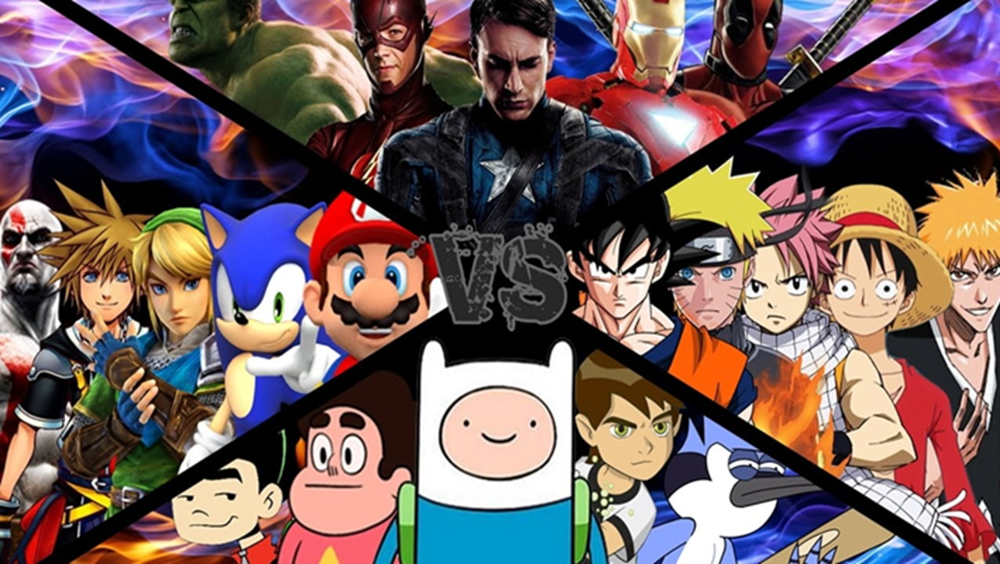

East vs. West: Understanding the Differences
While both anime and Western cartoons are forms of animation, they differ significantly in fundamental philosophy, storytelling structure, and target demographics. Traditionally, Western cartoons were produced almost exclusively for children, often featuring episodic, self-contained plots where the "status quo" resets by the end of every episode—characters rarely age, die, or undergo permanent changes. Anime, conversely, frequently embraces complex, serialized storylines that develop over entire seasons or even years. Characters grow, relationships evolve permanently, and significant events, including the death of major characters, have lasting impacts on the narrative, creating a deeper emotional investment for the viewer.
Visually, the distinction is also stark. Anime is renowned for its diverse art styles, but it often features high attention to detail in background art and mecha designs, alongside distinct character features like large, emotive eyes and vibrant, unrealistic hair colors that help distinguish characters instantly. Thematically, anime is unafraid to tackle mature, philosophical, or dark subjects, such as war, existentialism, and morality, even in shows aimed at younger teenage audiences (Shonen). While Western animation has certainly matured in recent years with acclaimed hits like Arcane, Invincible, or Rick and Morty proving cartoons aren't just for kids, the sheer breadth of genres and specific demographic targeting ingrained in the Japanese industry remains unmatched globally.